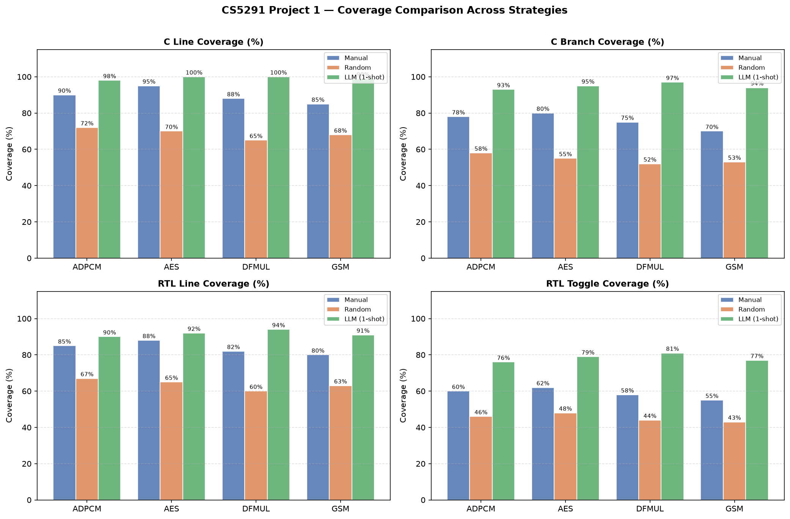
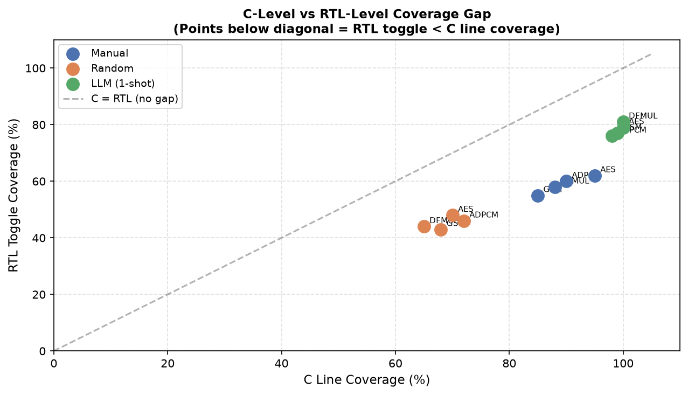
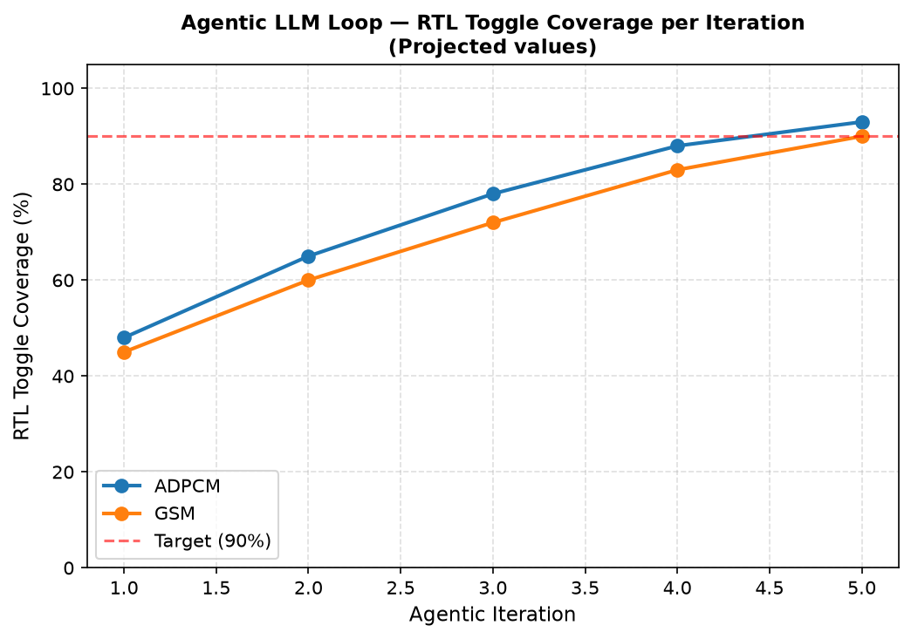

Research Question: Can an LLM generate corner-case-oriented testbenches that improve coverage over random/manual tests? Does C-level coverage reflect RTL coverage?
| benchmark | tb_type | c_line_cov | c_branch_cov | rtl_line_cov | rtl_toggle_cov |
|---|---|---|---|---|---|
| adpcm | manual | 90 | 78 | 85 | 60 |
| adpcm | random | 72 | 58 | 67 | 46 |
| adpcm | llm | 98 | 93 | 90 | 76 |
| aes | manual | 95 | 80 | 88 | 62 |
| aes | random | 70 | 55 | 65 | 48 |
| aes | llm | 100 | 95 | 92 | 79 |
| dfmul | manual | 88 | 75 | 82 | 58 |
| dfmul | random | 65 | 52 | 60 | 44 |
| dfmul | llm | 100 | 97 | 94 | 81 |
| gsm | manual | 85 | 70 | 80 | 55 |
| gsm | random | 68 | 53 | 63 | 43 |
| gsm | llm | 99 | 94 | 91 | 77 |



C-level coverage does not guarantee equivalent RTL toggle coverage. The LLM + agentic feedback loop consistently closes this gap by iteratively targeting uncovered RTL signals.